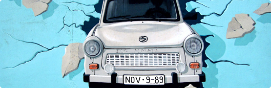
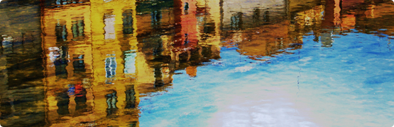
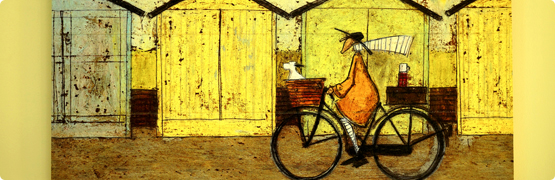
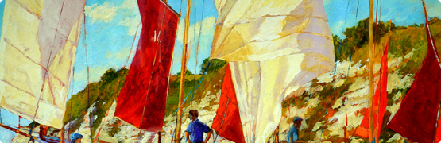

D-Day Hel to rekonstrukcja historyczna wydarzeń II wojny światowej, która przybliża odwagę żołnierzy i codzienne życie tamtych czasów.
Przeżyj emocje, jakie towarzyszyły żołnierzom. Zobacz rekonstrukcje walk Bitwy o Normandię, weź udział w prelekcjach i poznaj sprzęt żołnierzy alianckich i niemieckich.
Oddaj hołd historii podczas wyjątkowego wydarzenia w Helu.

Zobacz wyjątkową paradę pojazdów wojskowych oraz grup rekonstrukcyjnych w historycznych mundurach z okresu II wojny światowej. Ulicami Helu przejadą oryginalne i odrestaurowane maszyny, które na co dzień można oglądać jedynie w muzeach. To niepowtarzalna okazja, aby z bliska zobaczyć sprzęt i umundurowanie z lat 40. Rekonstruktorzy zadbają o autentyczność każdego detalu, przenosząc widzów w realia wojennej Europy. Parada to również świetna okazja do zdjęć i spotkań z pasjonatami historii.

Weź udział w inspirujących prelekcjach prowadzonych przez pasjonatów i ekspertów historii II wojny światowej. Poznasz kulisy operacji D-Day, historie żołnierzy oraz ciekawostki, o których nie przeczytasz w podręcznikach. Spotkania mają formę otwartą, dzięki czemu możesz zadawać pytania i brać udział w dyskusji. To doskonała okazja do pogłębienia wiedzy i spojrzenia na historię z nowej perspektywy. Strefa edukacyjna łączy wiedzę z pasją i autentycznymi opowieściami.
Przenieś się do świata elegancji lat 40. podczas wyjątkowego pokazu mody historycznej. Uczestnicy zaprezentują stylizacje inspirowane okresem II wojny światowej – zarówno cywilne, jak i wojskowe. To wydarzenie łączy historię z modą, pokazując jak wyglądało codzienne życie tamtych czasów. Publiczność będzie miała okazję zobaczyć unikalne stroje oraz detale charakterystyczne dla epoki.

Najbardziej widowiskowa część wydarzenia – realistyczne inscenizacje walk z okresu II wojny światowej z udziałem rekonstruktorów, pojazdów oraz efektów pirotechnicznych. W trakcie inscenizacji odtworzone zostaną sceny inspirowane wydarzeniami na frontach Normandii 1944 roku. To dynamiczne i emocjonujące widowisko pozwala poczuć atmosferę tamtych wydarzeń. Każdy detal został dopracowany, aby oddać realia pola walki. To punkt obowiązkowy dla każdego odwiedzającego D-Day Hel.

Poznaj styl i elegancję lat 40. podczas konkursu inspirowanego modą i fryzurami z epoki. Uczestnicy zaprezentują starannie odtworzone uczesania oraz stroje charakterystyczne dla tamtych czasów. Do udziału zapraszamy również odwiedzających – każdy może spróbować swoich sił i wcielić się w klimat lat 40. To wydarzenie pokazuje, jak mimo trudnych warunków wojennych dbano o wygląd i estetykę. Publiczność będzie mogła podziwiać kreatywność oraz dbałość o detale, a najlepsze stylizacje zostaną wyróżnione przez jury.
Odwiedź realistycznie odtworzone dioramy przedstawiające życie żołnierzy podczas II wojny światowej. Zobacz obozy, stanowiska bojowe oraz wyposażenie używane na froncie. Każda scena została przygotowana z dbałością o historyczną dokładność. To doskonała okazja, aby z bliska poznać realia codziennego życia żołnierzy. Rekonstruktorzy chętnie opowiedzą o prezentowanym sprzęcie i odpowiedzą na pytania odwiedzających.